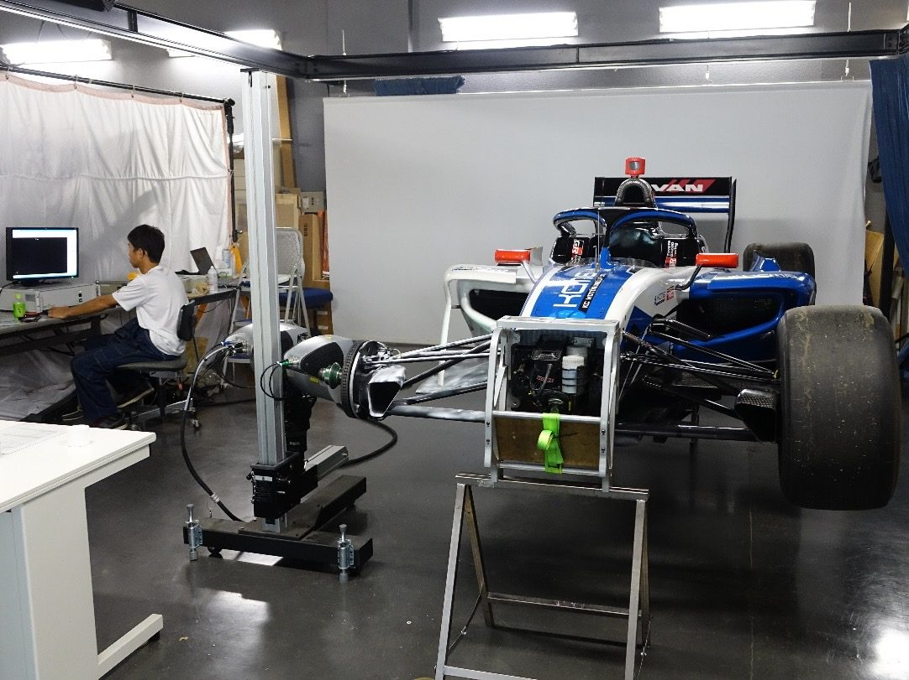
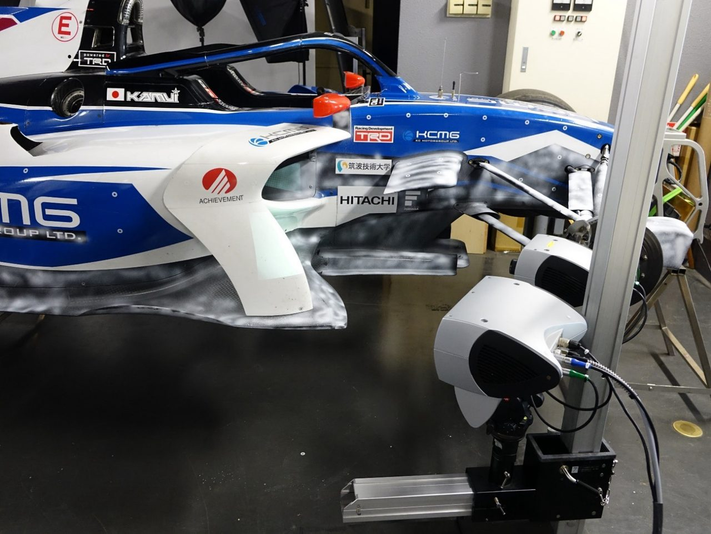

取り組みの概要
スーパーフォーミュラのレースで使用される車両は非常に複雑な形状で構成されています。３Dスキャナを用いてこのような車両を高精度で計測することは非常に困難ですが、実車（実際にレースで使用される車両）を計測できる機会はあまりありません。
そこで、卒業研究のテーマとして、実車の３D計測とデータ修正を行いました。最終的に、車両の完全なSTLデータを構築し、３Dプリンタによるスケールモデルの製作と、CFD（数値流体解析）による空力解析を行いました。
- 連携先
- 株式会社ディーティーエム
- 期間
- 2015年7月〜
- 関わった学生の領域
- 機械系
- 主体教員
- 産業技術学部：下笠賢二 教授
- 学生の関わり方
- 卒業研究
学生の学びと関わり
学生に求められた専門性
３Dスキャナの操作と計測対象物の適切な表面処理、データマッチング、STLデータ修正スキル。
連携先にとっての価値
計測した３D形状データを共有することができる。
成果
以前にはSF14、本事例のSF19、さらにSF23と、レース車両が新しく変わるたびに本学に実車を持ち込み、３D計測を行ってまいりました。現在も協力関係は継続中です。
連携先担当者の評価
※ コメントは掲載準備中です。株式会社ディーティーエム ご担当者
活動の写真
